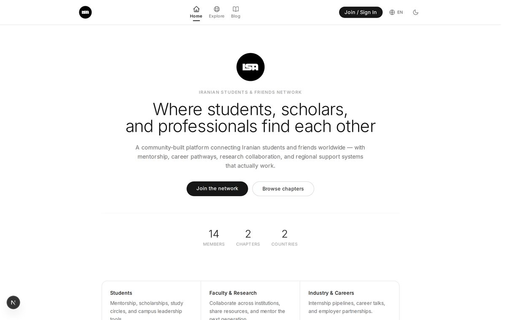
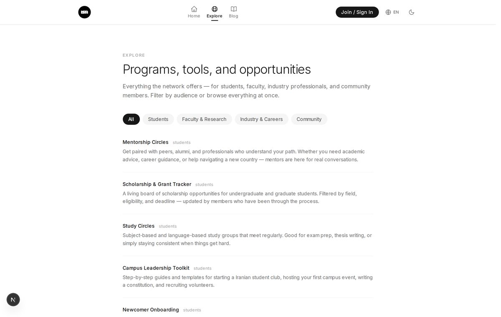
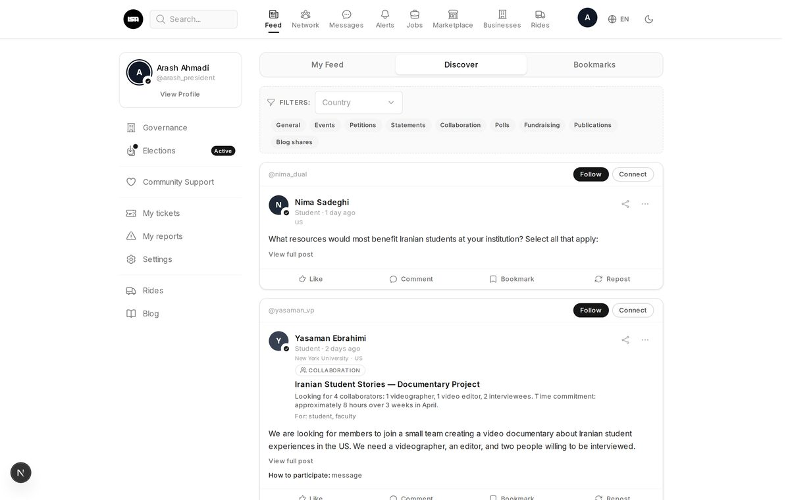
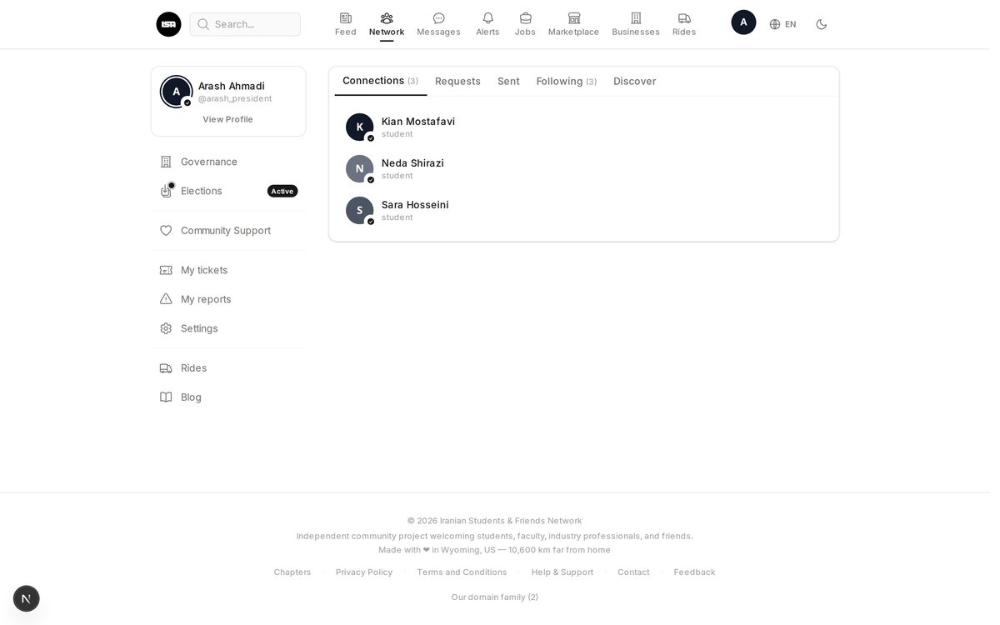
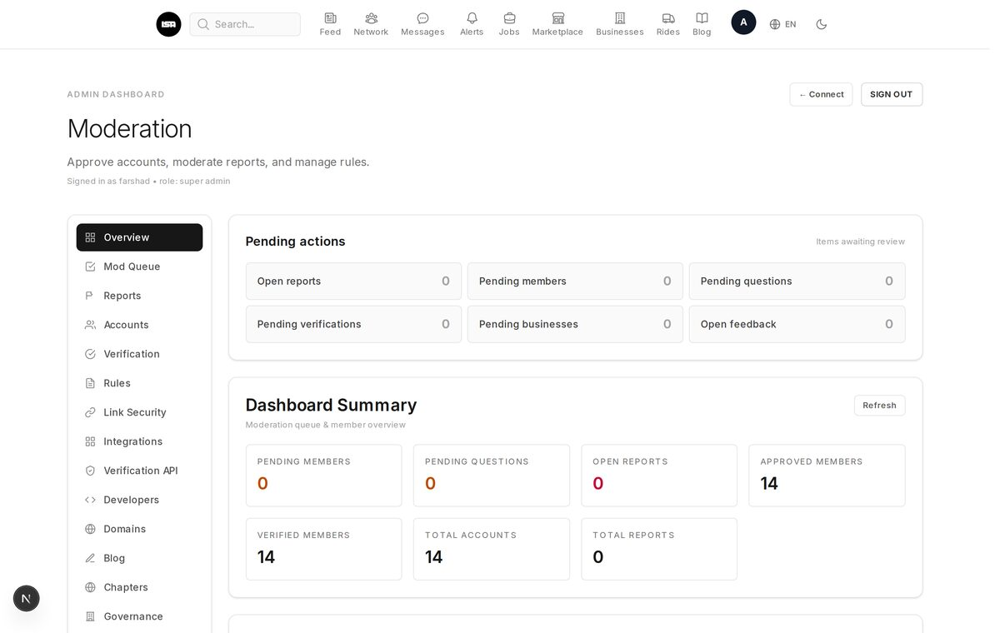
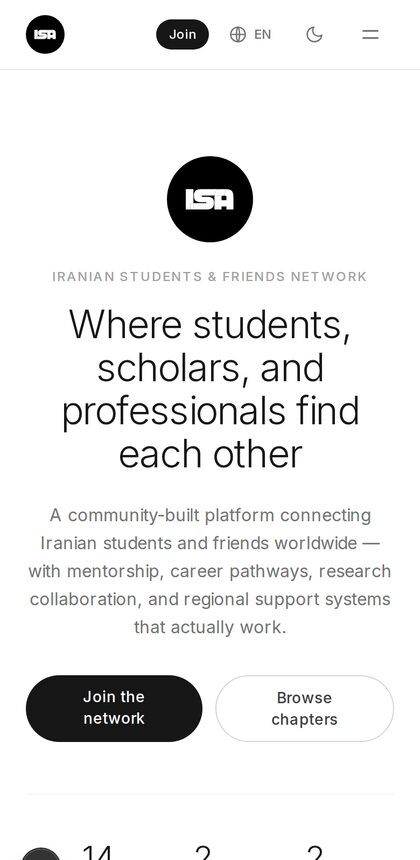

Iranian Students & Friends Network
An independent, community-built home for Iranian students, scholars, and professionals — mentorship, career pathways, research collaboration, and regional support.
Iranian Students Association was an independent project. It was designed, built, and run by one person, without any sponsor, grant, or institution behind it.
Running and maintaining a platform like this takes real time and money. Without any backing to sustain it, I've made the hard decision to take the live service offline rather than let it quietly fall apart.
But the work itself isn't gone. The entire codebase is open source on GitHub — every feature you see in the screenshots below, ready to be studied, forked, or brought back to life.
If you'd like to continue this project — revive it, build on it, or take it somewhere new — I'd genuinely be happy to help however I can. Reach out any time.
A few pages from the platform as it was.





